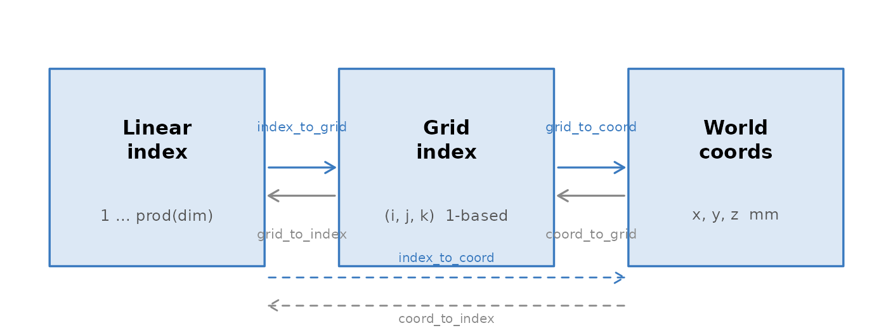

Every object in neuroim2 — a NeuroVol, a
NeuroVec, an ROI — carries a NeuroSpace that
answers one question: where in the scanner does this voxel sit?
Get that mapping right and anatomical coordinates, atlas overlays and
multi-subject registration all follow. Get it wrong and your activations
end up in the other hemisphere.
What a NeuroSpace holds
Call space() on any object to see it. Here is the space
of the brain mask that ships with the package:
mask <- demo_mask()
space(mask)
#> <NeuroSpace> [3D]
#> ── Geometry ────────────────────────────────────────────────────────────────────
#> Dimensions : 64 x 64 x 25
#> Spacing : 3.5 x 3.5 x 3.7 mm
#> Origin : 112, -108.5, -46.25
#> Orientation : LAS
#> Voxels : 102,400Five things are recorded:
-
Grid dimensions — voxel counts along each axis
(
dim) -
Voxel spacing — physical voxel size in millimetres
(
spacing) -
Origin — world coordinates of voxel
(1, 1, 1)(origin) -
Affine transform — the 4 x 4 matrix mapping voxel
indices to millimetres (
trans) -
Axis orientation — the anatomical direction each
axis runs (
axes)
You can also build one directly, which is what the rest of this article does so that the numbers stay easy to follow:
The affine transform
The affine is a 4 x 4 homogeneous matrix in trans(sp).
It maps a zero-based voxel position to millimetres:
[x_mm] [ ] [i]
[y_mm] = [ M t ] [j]
[z_mm] [ ] [k]
[ 1 ] [ 0 1 ] [1]M is the 3 x 3 linear block — spacing, rotation and any
shear — and t is the translation, which is the origin. For
an axis-aligned image M is diagonal:
trans(sp)
#> [,1] [,2] [,3] [,4]
#> [1,] 2 0 0 -90
#> [2,] 0 2 0 -126
#> [3,] 0 0 2 -72
#> [4,] 0 0 0 1Both pieces can be read straight back out:
trans(sp)[1:3, 4] # translation column = origin
#> [1] -90 -126 -72
diag(trans(sp)[1:3, 1:3]) # diagonal of linear block = voxel sizes
#> [1] 2 2 2The inverse (world to voxel) is cached on the space:
inverse_trans(sp)
#> [,1] [,2] [,3] [,4]
#> [1,] 0.5 0.0 0.0 45
#> [2,] 0.0 0.5 0.0 63
#> [3,] 0.0 0.0 0.5 36
#> [4,] 0.0 0.0 0.0 1You can supply a full affine instead of spacing and
origin, and neuroim2 derives the rest from it:
Three ways to address a voxel
neuroim2 uses 1-based grid indices throughout, matching R’s arrays. There are two voxel addressing schemes and one world system:
| Address | Range | Description |
|---|---|---|
| Linear index | 1 ... prod(dim) |
one integer, column-major, as in any R array |
| Grid index | (1...d1, 1...d2, 1...d3) |
a 1-based triple |
| World coordinate | millimetres | defined by the affine |

The three addressing schemes and the functions that convert between them.
Grid and linear index
grid_to_index(sp, matrix(c(10, 12, 5), nrow = 1))
#> [1] 17098
index_to_grid(sp, 17098L)
#> [,1] [,2] [,3]
#> [1,] 10 12 5Grid and world
grid_to_coord() subtracts 1 from the 1-based grid before
applying the affine, so voxel (1, 1, 1) lands exactly on
the origin:
grid_to_coord(sp, matrix(c(1, 1, 1), nrow = 1))
#> [,1] [,2] [,3]
#> [1,] -90 -126 -72
origin(sp)
#> [1] -90 -126 -72Pass a matrix with one row per point to convert many at once:
pts <- matrix(c(
1, 1, 1,
32, 32, 20,
64, 64, 40
), ncol = 3, byrow = TRUE)
grid_to_coord(sp, pts)
#> [,1] [,2] [,3]
#> [1,] -90 -126 -72
#> [2,] -28 -64 -34
#> [3,] 36 0 6World back to grid
coord_to_grid(sp, c(0, 0, 0))
#> [1] 46 64 37Straight from linear index to millimetres
index_to_coord() and coord_to_index() skip
the grid step:
index_to_coord(sp, 12345L)
#> [,1] [,2] [,3]
#> [1,] 22 -126 -66
coord_to_index(sp, matrix(c(22, -126, -66), nrow = 1))
#> [1] 12345A round trip
Going out to millimetres and back returns the voxel you started from, by either route:
idx <- 12345L
grid_to_index(sp, coord_to_grid(sp, grid_to_coord(sp, index_to_grid(sp, idx))))
#> [1] 12345
coord_to_index(sp, index_to_coord(sp, idx))
#> [1] 12345Orientation codes
Images are stored in many orientations. The orientation code names the anatomical direction each axis runs towards:
| Letter | Increasing index moves towards |
|---|---|
| R / L | Right / Left |
| A / P | Anterior / Posterior |
| S / I | Superior / Inferior |
"RAS" means axis 1 runs towards the right, axis 2
towards the front, axis 3 towards the top — the NIfTI and MNI
convention. Read it straight from an affine:
affine_to_axcodes(trans(sp))
#> [1] "R" "A" "S"
affine_to_axcodes(trans(mask))
#> [1] "L" "A" "S"The mask is LAS: its first axis runs the other way,
towards the left. That single difference is the usual reason an overlay
comes out mirrored, and it is worth checking with
affine_to_axcodes() before trusting two images to line
up.
reorient() rewrites a space to a target orientation:
sp_ras <- reorient(space(mask), c("R", "A", "S"))
affine_to_axcodes(trans(sp_ras))
#> [1] "R" "A" "S"It is relative to where you started, so asking for the orientation an image already has changes nothing:
This reinterprets the grid; it does not move the voxels. To resample
the data itself onto a new grid, see
vignette("resampling-and-orientation").
Oblique affines
Scanners often acquire at a slight tilt, which puts off-diagonal terms in the affine:
aff_obl <- matrix(c(
2.0, 0.2, 0.0, -90,
0.0, 2.0, 0.1, -126,
0.0, 0.0, 2.0, -72,
0.0, 0.0, 0.0, 1
), nrow = 4, byrow = TRUE)
sp_obl <- NeuroSpace(dim = c(91L, 109L, 91L), trans = aff_obl)spacing() returns the column norms of
the linear block — the true physical edge lengths — which is why it
disagrees with the diagonal here:
Always use spacing(), never the diagonal.
obliquity() quantifies the tilt, and
voxel_sizes() computes edge lengths from any affine:
obliquity(aff_obl)
#> [1] 0.00000000 0.09966865 0.04995840
obliquity(trans(sp))
#> [1] 0 0 0
voxel_sizes(aff_obl)
#> [1] 2.000000 2.009975 2.002498Adding and dropping a time axis
add_dim() extends a 3D space to 4D;
drop_dim() reverses it. Both leave the spatial affine
untouched, which is what makes it safe to move between a series and a
summary volume:
Four things that catch people out
Oblique affines. If
diag(trans(sp)[1:3, 1:3]) disagrees with
spacing(sp), the image is tilted. Use
obliquity() to measure it and deoblique() to
remove it.
1-based indices. grid_to_coord()
subtracts 1 for you. If you ever do raw affine arithmetic yourself,
subtract it first or every coordinate is off by one voxel.
sform versus qform. NIfTI stores two affines.
neuroim2 follows the standard priority — use the sform when
sform_code > 0, otherwise the qform — so
trans(space(img)) reflects whichever won. When a file’s two
affines disagree, what you get may not be what the pixdim field
advertises; vignette("reading-and-writing") shows how to
inspect both.
Float32 precision. NIfTI stores affine coefficients as 32-bit floats, and neuroim2 rounds to 7 significant figures to match. Round trips can show floating-point noise around 0.001 mm. Compare coordinates with a tolerance.
Quick reference
| Function | Maps | Typical use |
|---|---|---|
grid_to_index(sp, m) |
grid to linear | looking up voxel data |
index_to_grid(sp, i) |
linear to grid | interpreting array subscripts |
grid_to_coord(sp, m) |
grid to mm | reporting a location |
coord_to_grid(sp, m) |
mm to grid | atlas and seed lookup |
index_to_coord(sp, i) |
linear to mm | shortcut past the grid |
coord_to_index(sp, m) |
mm to linear | mask extraction |
affine_to_axcodes(a) |
affine to "RAS"
|
orientation check |
reorient(sp, codes) |
space to space | standardise orientation |
voxel_sizes(a) |
affine to mm | physical voxel size |
obliquity(a) |
affine to radians | tilt check |
add_dim(sp, n) |
3D to 4D | attach a time axis |
drop_dim(sp) |
4D to 3D | strip a time axis |
Where to go next
-
vignette("volumes-and-vectors")— the containers this geometry is attached to -
vignette("resampling-and-orientation")— changing a grid rather than just reinterpreting it -
?NeuroSpace,?affine_to_axcodes,?obliquity